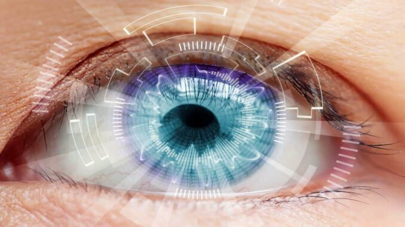

Primul implant de cristalin; chirurgia cataractei
Primul implant de cristalin a constituit un punct de cotitură în evoluția chirurgiei cataractei. Acesta a reușit să schimbe viața a milioane de oameni. Vindecarea unei afecțiuni ce părea imposibilă a apărut aproape din întâmplare. Așa cum se nasc de fapt marile idei, cum apar marile invenții, chiar dacă la ele oamenii se gândesc dintotdeauna.
Oftalmologia în general și chirurgia cataractei în special au beneficiat din plin de progresul tehnologic nemaiîntâlnit din ultimele decenii. În rândurile care urmează vom relata despre două inovații care au revoluționat tehnica chirurgicală. Ele au permis obținerea de rezultate fără precedent: tehnica facoemulsificării și apariția cristalinelor artificiale pliabile.
Bazele implantologiei oculare
Istoria cristalinelor artificiale începe la sfârșitul anilor 1940 când un oftalmolog britanic, dr. Harold Ridley a făcut o observație esențială. El a remarcat că fragmentele din plexicul parbrizelor ajunse în ochii piloților în urma accidentelor aviatice erau bine tolerate de organism. De aici, ideea de a concepe niște lentile intraoculare din materialul din care erau fabricate parbrizele avioanelor, polimetilmetacrilat (PMMA). Această descoperire aproape întâmplătoare a fondat o nouă disciplină, implantologia oculară. Practic s-a revoluționat felul în care chirurgia cataractei urma să schimbe viețile a milioane de oameni.
Dr Ridley poate fi considerat fondatorul chirurgiei cataractei așa cum o cunoaștem astăzi, echipa sa realizând și primele implante de cristalin.
Tehnica facoemulsificării
Mai târziu, Dr. Charles Kelman, în 1967, a conceput un dispozitiv care înlătura cristalinul cataractat cu ajutorul ultrasunetelor. Se lansa metoda facoemulsificării în chirurgia cataractei. Avantajul major pe care această tehnică îl aducea cu sine era reprezentat de posibilitatea extragerii cristalinului printr-o incizie foarte mică. Până atunci, cristalinul, care are oformă eliptică și măsoară 9mm în diametru și 4mm grosime, era extras printr-o incizie de minim 5-6mm. O incizie la aceste dimensiuni avea câteva consecințe negative:
- asupra arhitecturii postoperatorii a corneei;
- în privința rezultatului refractiv;
- asupra siguranței operației și a riscului de complicații.
La vremea respectivă, însă, pacienții nu puteau beneficia până la capăt de avantajele microinciziei din cauza implantelor din material rigid. Pentru că nu puteau fi introduse prin incizii atât de mici.
Primele implanturi de cristalin
Abia mult mai târziu, în anii ´80 au fost implantate primele cristaline artificiale pliabile din silicon, primul material care a permis introducerea implantului printr-o incizie mică. De atunci, calitatea și proprietățile materialelor din care sunt făcute implantele de cristalin au avansat constant. Au evoluat de la vechiul polimetilmetacrilat rigid, până la cele pliabile din silicon (polisiloxan), hidrogel (hidrofile). Și s-a ajuns la cele mai folosite în ziua de azi, cristalinele acrilice hidrofobe.
Combinația dintre tehnica facoemulsificării și implantarea de cristaline artificiale pliabile a permis practicarea chirurgiei cataractei prin incizii din ce în ce mai mici. Astăzi inciziile au dimensiuni de 2.4, 2.2 și chiar sub 2mm. A fost deschis poarta spre obținerea unor rezultate funcționale excepționale.
Viitorul, cu siguranță, va continua să ne ofere surprize plăcute în acest domeniu. Se vorbește deja despre implicarea inteligenței artificiale în ameliorarea formulelor de calcul și a predictibilității chirurgiei cataractei.
Consultații și intervenții chirurgicale de cataractă Dr. Andrei Mureșan